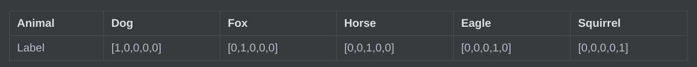
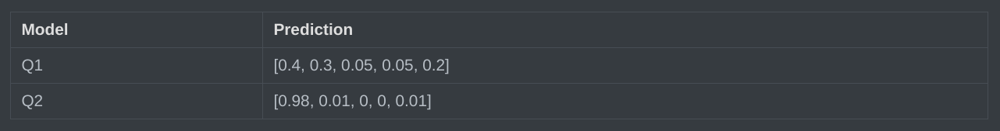
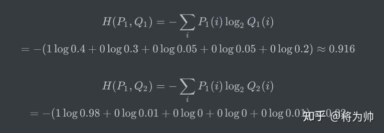

熵、交叉熵，KL 散度
熵
信息量
信息量是对信息的度量，我们接受到的信息量和具体发生的事情有关。
信息的大小和随机事件的概率负相关。概率越小的事情若发生了产生的信息量越大，因为它排除了别的很多的可能性，例如今天下冰雹；而概率越大的事情产生的信息量越小，例如太阳从东边升起并不会带来什么信息。
假设有不相关事件 X 和 Y，若两个事件同时发生，其概率为 P(X, Y) = P(X) * P(Y)，产生的信息量为 h(X, Y) = h(X) + h(Y)，由此可见信息量 h(X) 与发生概率 P(X) 对数相关。
综上两条性质，可以定义信息量： h(X) = −log2P(X)
底数为 2 这是因为只是遵循信息论的普遍传统，使用 2 作为对数的底。
熵（信息熵）
信息量度量的是一个具体事件发生了所带来的信息，而信息熵则是在结果出来之前对可能产生的信息量的期望——考虑该随机变量的所有可能取值，即所有可能发生事件所带来的信息量的期望。熵简写为 H，定义为 H(P) = Entropy = 𝔼x ∼ P[−log P(x)] 对于离散随机变量 X ∼ P，其公式为 H(P) = −∑iP(xi)log2P(xi) 对于连续随机变量 X ∼ P，其公式为 H(P) = −∫P(x)[log2P(x)]dx
信息论中熵的概念首次被香农提出，目的是寻找一种高效/无损地编码信息的方法：以编码后数据的平均长度来衡量高效性，平均长度越小越高效；同时还需满足“无损”的条件，即编码后不能有原始信息的丢失。这样，香农提出了熵的理论定义：无损编码事件信息的最小平均编码长度。
对于最理想的情况，N 个事件等可能，则每个事件编码长度为 $\log_{2} N=-\log\frac{1}{N}=-\log P$，那么平均最小编码长度就是 −∑iP(i)log P(i)。这也是所有情况的平均编码长度的理论下限。
物理学中熵定义为 S = kln Ω。
交叉熵
##熵的估计
根据熵的公式定义可知，只要知道了任何事件的概率分布 P，就可以计算它的熵。然而，在不知道事件的概率分布的情况下，想要计算熵，只能去估计熵。
在观测之前，我们只有预估的概率分布 Q，使用估计得到的概率分布 Q，可以计算估计的熵： EstimatedEntropy = 𝔼x ∼ Q[−log Q(x)]
交叉熵
然而，估计的概率分布 Q 为公式引入了两部分的不确定性：不确定的概率分布 Q 与不确定的最小编码长度 −log Q(x)，因此估计的熵结果 EstimatedEntropy 可能错得离谱，与真实的熵 Entropy 对比毫无意义。
我们的目的是为了使估计的概率分布 Q 尽可能接近真实的概率分布 P，也就是为了让平均最小编码长度尽可能小，而理论平均最小编码长度的值为熵 Entropy = 𝔼x ∼ P[−log P(x)]，因此我们需要对比最小编码长度 −log Q(x) 与 −log P(x)，即通过 𝔼x ∼ P[−log Q(x)] 的值来评判 Q 对 P 的接近程度。
从而定义交叉熵： H(P, Q) = CrossEntropy = 𝔼x ∼ P[−log Q(x)] 由交叉熵的定义可知，交叉熵的最小值为熵 𝔼x ∼ P[−log P(x)]，当且仅当估计的概率分布 Q 与真实的概率分布 P 完全吻合时取得最小值。因此可以使用交叉熵作为损失函数，目标为最小化交叉熵。
为什么交叉熵用真实概率分布 P 作为概率分布去计算估计的最小编码长度 −log Q(x) 的期望，而不是反过来，用估计的概率分布 Q 作为概率分布去计算真实的最小编码长度 −log P(x) 的期望？
我们的目标是为了让 Q 去回归 P，因此衡量标准必须以 P 为基准，交叉熵表达的是在真实分布下，当前编码方案的平均编码长度；最小化交叉熵的过程意味着基于真实情况最优化编码方案。如果反过来定义，则没有意义；它优化的方向是未知的，甚至不能收敛，因为 𝔼x ∼ Q[−log P(x)] 未必一定大于 𝔼x ∼ P[−log P(x)]，这是未知的。
交叉熵作为损失函数
假设一个动物照片的数据集中有 5 种动物，且每张照片中只有一只动物，每张照片的标签都是 one-hot 编码。

第一张照片是狗的概率为 100%，是其他的动物的概率是 0；第二张照片是狐狸的概率是 100%，是其他动物的概率是0；其余照片同理。因此可以计算下，每张照片的熵都为 0。换句话说，以 one-hot 编码作为标签的每张照片都有 100% 的确定度，不像别的描述概率的方式：狗的概率为 90%，猫的概率为 10%。
假设有两个机器学习模型对第一张照片分别作出了预测：Q1 和 Q2，而第一张照片的真实标签为 [1,0,0,0,0]。

两个模型预测效果如何呢，可以分别计算下交叉熵：

交叉熵对比了模型的预测结果和数据的真实标签，随着预测越来越准确，交叉熵的值越来越小，如果预测完全正确，交叉熵的值就为 0。因此，训练分类模型时，可以使用交叉熵作为损失函数。
KL 散度
KL 散度（相对熵）
假设有两个概率分布 P 和 Q，且事件为连续型随机变量。对于单个事件 x，模型 P 相对模型 Q 的信息损失为信息量之差 $(-\log Q(x))-(-\log P(x))=\log(\frac{P(x)}{Q(x)})$；要衡量模型 P 相对于模型 Q 的整体损失（平均损失），需要计算所有事件的信息损失的平均，即为 $\int P(x)\log(\frac{P(x)}{Q(x)})dx$。
从而定义 KL 散度： $$ KL(P||Q)=\int P(x)\log(\frac{P(x)}{Q(x)})dx $$ 称作 P 相对于 Q 的 KL 散度，其表达的含义为当我们认为（或假设）真实分布是 Q，但实际数据来自 P 时，所产生“信息损失”的平均值，一句话说就是用假设分布 Q 去代表真实分布 P 的代价。
从上述公式可以看出，当且仅当 P = Q 时，KL(P||Q) = 0。此外具有两个性质：非负性与不对称性。后者意味着 P 对于 Q 的 KL 散度并不等于 Q 对于 P 的 KL 散度。因此，KL 散度并不是一个度量，即 KL 散度并非距离。
KL 散度的理论意义在于度量两个概率分布之间的差异程度，当 KL 散度越大的时候，说明两者的差异程度越大；而当 KL 散度小的时候，则说明两者的差异程度小。如果两者相同的话，则该 KL 散度应该为 0。
KL 散度与交叉熵和信息熵的关系
将 KL 散度公式变形： $$ KL(P||Q)=\int P(x)\log(\frac{P(x)}{Q(x)})dx=-\int P(x)\log Q(x)dx+\int P(x)\log P(x)dx=H(P,Q)-H(P) $$ 因此 KL 散度为交叉熵与信息熵之差。
在分类任务中，由于真实标签分布 P（通常是one-hot）的熵 H(P) = 0，因此在这个特定场景下，最小化交叉熵 H(P, Q) 完全等价于最小化 KL 散度 KL(P||Q)。这解释了为什么交叉熵能成为如此完美的代理损失函数。
参考
一文搞懂熵(Entropy),交叉熵(Cross-Entropy) - 知乎
机器学习_KL散度详解（全网最详细）_kl散度计算公式-CSDN博客
深入理解 KL 散度（Kullback-Leibler Divergence）：从直觉、数学到前沿应用的全方位解析 - 知乎